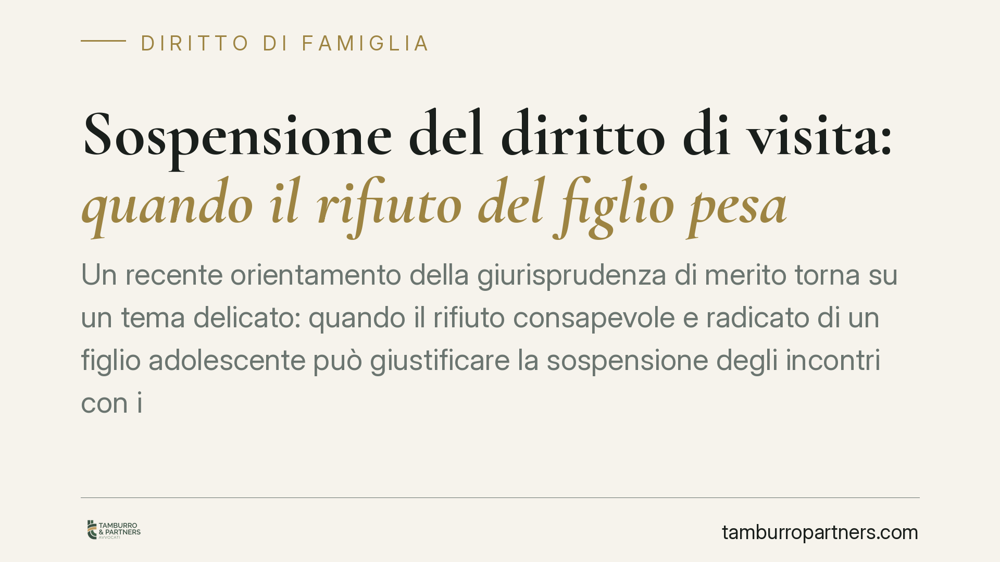

Sospensione del diritto di visita: quando il rifiuto del figlio pesa
Un recente orientamento della giurisprudenza di merito torna su un tema delicato: quando il rifiuto consapevole e radicato di un figlio adolescente può giustificare la sospensione degli incontri con il padre. La risposta è articolata, perché sospensione delle visite, affido esclusivo rafforzato e decadenza dalla responsabilità genitoriale rispondono a presupposti giuridici diversi e non vanno confusi.

Il caso e i piani in gioco
In una vicenda di separazione, una figlia adolescente manifesta un rifiuto consapevole e radicato nel tempo di incontrare il padre. La domanda che il giudice deve sciogliere non è una sola, ma tre, distinte e autonome: si possono sospendere le visite? Va modificato il regime di affido? Ricorrono i presupposti per far decadere il padre dalla responsabilità genitoriale?
Sono tre quesiti che toccano piani giuridici diversi. Confonderli porta spesso a richieste sproporzionate in sede giudiziale, con il rischio di vedersele rigettare proprio per difetto dei presupposti.
Inquadramento normativo
Il punto di partenza è l'art. 337-ter cod. civ., che afferma il diritto del minore a mantenere un rapporto equilibrato e continuativo con entrambi i genitori. Attenzione: la bigenitorialità è anzitutto un diritto del figlio, non una prerogativa del genitore. Il parametro resta sempre l'interesse del minore.
L'art. 337-quater cod. civ. disciplina l'affidamento a un solo genitore quando l'affido condiviso è contrario all'interesse del figlio. Va chiarito un punto spesso frainteso: il cosiddetto affido "super esclusivo" (o esclusivo rafforzato) — con cui si attribuisce a un solo genitore anche le decisioni di ordinaria amministrazione — non è un istituto tipizzato dal codice. È una categoria di elaborazione giurisprudenziale, costruita sulla base dell'art. 337-quater per i casi più critici.
L'art. 330 cod. civ. riguarda invece la decadenza dalla responsabilità genitoriale: misura ben più grave, che presuppone una violazione o trascuratezza dei doveri, o un abuso, tali da arrecare grave pregiudizio al figlio.
Sul piano procedurale rileva l'art. 336-bis cod. civ.: il giudice ascolta il minore che abbia compiuto i dodici anni, e anche di età inferiore ove capace di discernimento. L'ascolto non è una formalità: la volontà espressa, specie se consapevole e stabile, incide sulla decisione.
Perché la Corte distingue
La chiave sta nel non sovrapporre i piani.
La sospensione delle visite può essere disposta quando il rapporto, allo stato, è pregiudizievole o impraticabile — ad esempio per un rifiuto radicato del figlio adolescente — ma è per sua natura una misura tendenzialmente temporanea, orientata a un recupero futuro della relazione, spesso con il supporto dei servizi sociali.
L'affido esclusivo rafforzato alla madre risponde a una valutazione sull'esercizio concreto della genitorialità: a chi è più funzionale affidare le decisioni sul minore.
La decadenza ex art. 330 è tutt'altro: richiede condotte gravi del genitore. Il rifiuto del figlio, di per sé, non integra una condotta pregiudizievole del padre. Per questo un giudice può sospendere le visite e disporre un affido rafforzato, ma negare la decadenza: mancano i presupposti più gravi che la legge richiede.
È una distinzione che tutela entrambe le parti. Evita che il conflitto genitoriale si traduca automaticamente nella sanzione più pesante e mantiene aperta la via del recupero del rapporto.
Implicazioni pratiche
Per il genitore che subisce la sospensione, il messaggio è che la misura non è necessariamente definitiva: il percorso di riavvicinamento, se seguito, può portare a una revisione.
Per il genitore che la richiede, è utile sapere che pretendere la decadenza senza fatti gravi e documentati espone a un rigetto. La misura va calibrata sul reale presupposto.
Per entrambi, il ruolo del minore ultradodicenne è centrale: la sua voce, se raccolta nelle forme di legge, pesa concretamente.
Cosa fare in concreto
- Documentate nel tempo i fatti rilevanti: comunicazioni, episodi, eventuali relazioni dei servizi sociali. La prova scritta è decisiva.
- Calibrate la domanda sul presupposto reale: sospensione, modifica dell'affido o decadenza non sono intercambiabili.
- Non ostacolate l'ascolto del minore: la posizione del figlio ultradodicenne incide, e tentare di condizionarla è controproducente.
- Valorizzate i percorsi di supporto: la disponibilità a un percorso con i servizi è un elemento favorevole in ottica di recupero della relazione.
- Rivolgetevi a un legale prima di agire, per inquadrare correttamente la strategia processuale sul caso specifico.
Disclaimer
Contributo informativo a cura di Tamburro & Partners Avvocati. Non costituisce parere legale.
Ogni famiglia ha il suo equilibrio.
Separazione, divorzio, affidamento, assegno: se vuoi un confronto riservato su una specifica situazione, scrivi allo studio. Ti rispondiamo entro un giorno lavorativo.